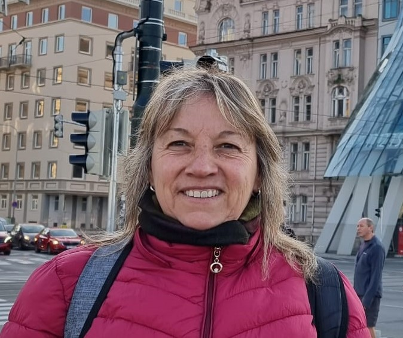

Esta empresa personal fue creada y es producida por una sola persona, la cual vemos en la imagen a la derecha (Patricia Mabel). Este emprendimiento tiene una historia de como nacio todo, esa historia se resume basicamente en honor a una amiga de la dueña, la cual tuvo cancer y no conseguia turbantes por ningun lado. Esta persona acudio a Patricia Mabel para que le haga algunos turbantes ya que no podia conseguir ninguno. Al tiempo esta amiga lamentablemente no logro ganar la carrera que venia tratando de ganar y nos abandono dejando mucha tristeza. Fue a partir de ahi que surgio la idea de empezar a elaborar Turbantes para poder ayudar a las personas que estaban pasando por ese momento tan feo y poder darle un poco de comodidad y hacerla sentir mejor. Todo empezo como una idea y hoy en dia hacemos envios a todo el pais logrando dejar un poquito de alegria por diferentes lugares.
ContactateElla es Patricia Mabel, la dueña de este emprendimiento y la creadora de los Turbantes. Años de experiencia la avalan en el sector de modista y costureria. Todos esos años de experiencia estan plasmados en los diseños y calidad de los turbantes.
